Retro
- “Clear a Line” appears (2 seconds)
Marathon
- Game fades in, “Downtown” already visible
- Camera pans down to level (already in place)
- “Player One” appears and player Tetrimino appears
- “Move side-to-side” appears (for 2 seconds)
- “Nod or Squat to slam” appears (until they slam or 2 seconds)
- “Clear 3 lines” appears (for 2 seconds)
- When a line is cleared, a message appears “2 lines left” or “1 line left” etc. (for 1 second)
- When last line is cleared, message appears “Round Complete”
- After final player, main scoreboard appears
Nod or squat to slam
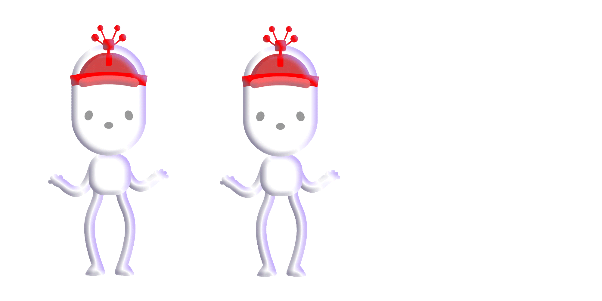
5:27.26
5:27.26
DOWNTOWN
Player 1+5
Player 2+4
Player 3+6
Player 4+8
TEAM TOTAL87+23
Packing
- Game fades in, “BONUS ROUND - SMOOTHIE" already visible (“Wardrobe”, “Moving Truck”)
- Camera dollys-in from wide-view to mid-view
- “Player One” appears
- “Pack the Smoothie with fruit” with pic of fruit (2 seconds)
“Pack the Wardrobe” with pic of clothes
“Pack the Moving Truck” with pic of stuff
- “Get Ready” (1 second)
- “3” “2” “1” countdown
- Player tally appears on death
- At end of game, main scoreboard appears
BONUS ROUND
SMOOTHIE
PACK THE SMOOTHIE
WITH FRUIT
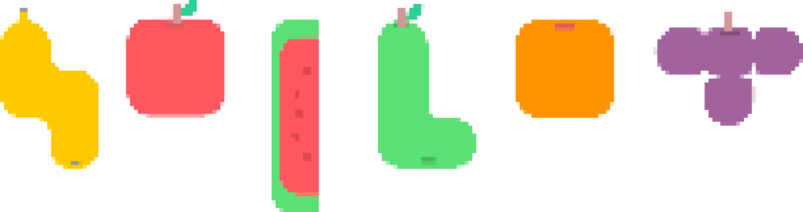
PLAYER 115
PLAYER 216
PLAYER 314
Oranges+5
Apples+4
Bananas+6
Watermelons+8
PLAYER 4 TOTAL15
SMOOTHIE
Player 115
Player 218
Player 316
Player 412
TEAM TOTAL87+18
JIGSAW
- Game fades in, “Warehouse” already visible
- Camera pans down to warehouse floor
- “Player X” appears
- Tetriminos fly in
- “Make a perfect cube” appears (2 seconds)
- At end of game, main scoreboard appears
MAKE A PERFECT CUBE
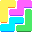
5:27.26
WAREHOUSE
TEAM CUBES+12
TEAM TOTAL87+12
STACKING
- Game fades in, “Diner” already visible
- Camera moves from side-view to counter-view
- “Player X” appears
- Game starts
- “Stack your burger” appears (2 seconds)
- At end of game, main scoreboard appears
STACK THE BURGER
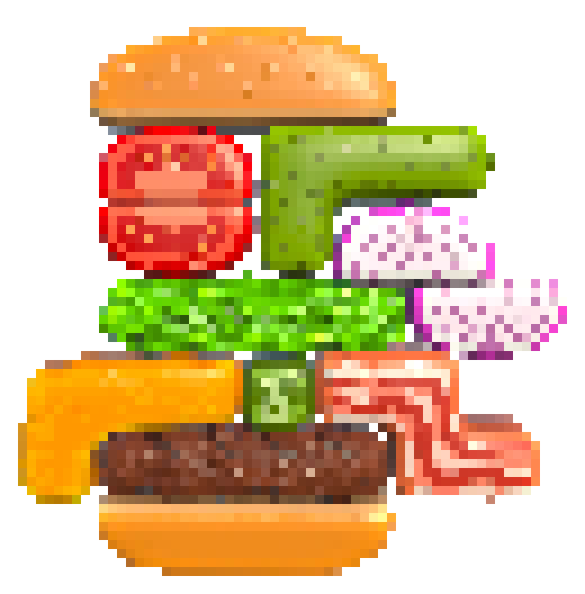
Hold the onion
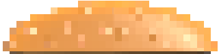
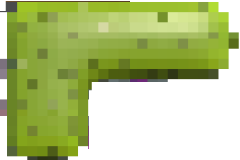0/1
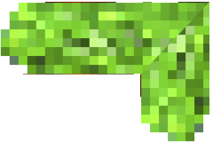1/2
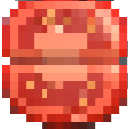1/2
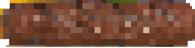1/2
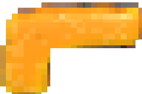3/3
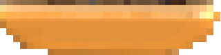
Double Cheese
1/2
0/2
5:27.26
DINER
Player 115
Player 218
Player 316
Player 412
TEAM TOTAL87+18
BRIDGE
- Game fades in, “City Park” already visible
- Camera pans down to show bridge/park
- “Player X” appears
- “Build a bridge” appears with pic of bridge (2 seconds)
- “Here they come” (1 second)
- “3” “2” “1” countdown
- Bridge score appends to list after each bridge
- At end of game, total for all bridges is added to tally
BUILD A BRIDGE
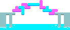
BRIDGE COMPLETE
Bridge 1+3
Bridge 2+5
CITY PARK
Bridge 1+3
Bridge 2+5
Bridge 3+7
Bridge 4+3
TEAM TOTAL87+18
DOME
- Game fades in, “The Dome” already visible
- Camera pans down to show dome
- “All players” appears
- Blocks appear
- “CHOOSE YOUR BLOCK” with pic of tapping the blocks (2 seconds)
- “SEAL THE DOME” with pic of block falling into hole (2 seconds)
- No scoreboard
CHOOSE YOUR BLOCK
 SEAL THE DOME
SEAL THE DOME
FINALE
- Main scoreboard appers with final tally
FINAL SCORE
Player 147
Player 255
Player 365
Player 445
TEAM TOTAL167